In ordinary category theory, every category \(C\) gives rise to another category \(C\catop\), called the opposite category of \(C\). While \(C\catop\) has the same objects as \(C\), the morphisms in \(C\catop\) are reversed: a morphism from \(x\) to \(y\) in \(C\catop\) is given by a morphism from \(y\) to \(x\) in \(C\). Our goal in this section is to provide an analogous construction when \(C\) is a synthetic category.
Since our synthetic language does not offer a primitive operation that simply reverses all morphisms, we proceed by giving an explicit construction of \(C\catop\) in terms of functors \(C \to \An\) that are corepresented by objects of \(C\). This construction has the additional advantage that the Hom-functor is built into the construction.
In order to motivate our definition of \(C\catop\), we briefly recall the situation in classical category theory. Since there categories are defined analytically, we may directly construct the category \(C\catop\) by reversing all morphisms. We may further construct the Yoneda embedding \[ h_C\colon C \to \Fun(C\catop,\Set), \qquad x \mapsto \Hom_C(-,x), \] which is called an embedding since it is fully faithful. By applying this construction to \(C\catop\) in place of \(C\), we obtain a fully faithful functor \[ h_{C\catop}\colon C\catop \hookrightarrow \Fun(C,\Set). \] The essential image consists of precisely those functors \(F\colon C \to \Set\) that are corepresentable, meaning that they are naturally isomorphic to a functor of the form \(\Hom_C(x,-)\colon C \to \Set\) for some object \(x\) of \(C\).
For our synthetic definition of the opposite category \(C\catop\) of \(C\), we will turn this logic on its head and define \(C\catop\) as the full subcategory of \(\Fun(C,\An)\) spanned by the corepresentable functors. Making this precise will take up the remainder of this section.
12.1.1 Corepresentable functors and the opposite category
Throughout this discussion, we fix a universe of categories \(\Cat\) with associated universe of animae \(\An\), and construct the opposite of categories that are small with respect to this universe. We explain at the end why the resulting definition of \(C\catop\) is independent of the chosen universe level, giving rise to a well-defined opposite for an arbitrary category \(C\).
Construction 12.1.1 (Covariant Hom-functor). Let \(C\) be a small category and let \(x\) be an object of \(C\). The slice category \(C_{x/}\) fits in a pullback square of the form
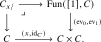 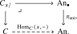
Definition 12.1.2 (Corepresentable functor). We say that a functor \(F\colon C \to \An\) is corepresentable if there exists an object \(x\) of \(C\) and an identification \(\Hom_C(x,-) = F\).
A priori the condition of a functor to be corepresentable seems to involve a choice of object \(x\) of \(C\). It turns out that the presentation of a presheaf by a corepresentable one is unique if it exists, so that corepresentability is really a property of a functor \(F\). The following is the key statement we need for this:
Proposition 12.1.3. For a functor \(F\colon C \to \An\), let \(p_F\colon \int F \to C\) denote the small cocartesian fibration classified by \(F\). Then \(F\) is corepresentable if and only if \(\int F\) admits an initial object.
Proof
Let \(x\) be an object of \(C\). Observe that there is an equivalence between the following three types of data:
(1) Objects \(y\) of the fiber of \(p_F\) over \(x\).
(2) Functors \(\varphi\colon C_{x/} \to \int F\) over \(C\).
(3) Natural transformations \(\Hom_C(x,-) \to F\) of functors \(C \to \An\).
Directed univalence identifies the data in (2) and (3). For comparing (1) and (2), note that the slice \(C_{x/}\) has an initial object \((x,\id_x)\), so that the functor \((x,\id_x)\colon * \to C_{x/}\) is initial by Proposition 9.1.13. It follows from Remark 9.1.5 that for every object \(y\) of \(\int F\) satisfying \(p_F(y) = x\) there exists a unique functor \(\varphi\colon C_{x/} \to \int F\) fitting in the following commutative diagram:
 We claim that the object \(y\) is initial in \(\int F\) if and only if the corresponding natural transformation \(\Hom_C(x,-) \to F\) is a natural isomorphism of functors \(C \to \An\). Indeed, since directed univalence respects composition, the latter is equivalent to the condition that \(\varphi\colon C_{x/} \to \int F\) is an equivalence. Since \(\varphi\) is a morphism between left fibrations over \(C\), it is an equivalence if and only if it is an initial functor, see Lemma 9.1.6. By Proposition 9.1.8, this is in turn equivalent to \(y\colon * \to \int F\) being an initial functor, which by Proposition 9.1.13 happens precisely when \(y\) is initial in \(\int F\).
We claim that the object \(y\) is initial in \(\int F\) if and only if the corresponding natural transformation \(\Hom_C(x,-) \to F\) is a natural isomorphism of functors \(C \to \An\). Indeed, since directed univalence respects composition, the latter is equivalent to the condition that \(\varphi\colon C_{x/} \to \int F\) is an equivalence. Since \(\varphi\) is a morphism between left fibrations over \(C\), it is an equivalence if and only if it is an initial functor, see Lemma 9.1.6. By Proposition 9.1.8, this is in turn equivalent to \(y\colon * \to \int F\) being an initial functor, which by Proposition 9.1.13 happens precisely when \(y\) is initial in \(\int F\).
As a consequence of Proposition 12.1.3, we expect to be able to form the full subcategory \(C\catop\) of \(\Fun(C,\An)\) spanned by the corepresentable functors. In order to make this precise, we need to formulate the condition of being corepresentable in terms of a category. We start with a formulation of initiality.
Definition 12.1.4. For a small category \(C\), we define
\[
\mathtt{hasInitial}(C) := \sum_{x : * \to C} \mathtt{isEquiv}(C_{x/} \to C).
\]
More precisely, we define this category via the following pullback square:
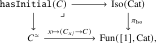 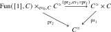
Lemma 12.1.5. The category \(\mathtt{hasInitial}(C)\) is a proposition.
Proof
Note that the type \(\mathtt{isEquiv}(C_{x/} \to C)\) is a proposition for every \(x\). So we get an embedding \(\mathtt{hasInitial}(C) \to C^{\simeq}\), and thus we obtain a full subcategory \(\lra{\mathtt{hasInitial}(C)} \hookrightarrow C\) consisting of all initial objects of \(C\). Notice that every morphism in this subcategory is automatically an isomorphism, hence it is actually equivalent to the anima \(\mathtt{hasInitial}(C)\). It remains to show that the functor \(\mathtt{hasInitial}(C) \to *\) is fully faithful, since all fully faithful functors are embeddings. The mapping animae on both sides are contractible by the defining property of initial objects.
Construction 12.1.6. Let \(C\) be a small category. We will construct an anima \((C\catop)^{\simeq}\) equipped with an embedding \[ (C\catop)^{\simeq} \hookrightarrow \Map(C,\An) \] such that a functor \(F\colon C \to \An\) is contained in \((C\catop)^{\simeq}\) if and only if it is corepresentable, or equivalently if the total category \(\int F\) of the left fibration \(p_F\colon \int F \to C\) associated to \(F\) has an initial object.
Consider the anima \(\Gamma := \Map(C,\An)\). Then the inclusion \(\Gamma \hookrightarrow \Fun(C,\An)\) gives rise via currying to a functor \(\Gamma \times C \to \An\), and hence to a left fibration \(p\colon X \to \Gamma \times C\). Working in context \(\Gamma\), we may then consider the statement \(\mathtt{hasInitial}(X)\) in context \(\Gamma\), which by Lemma 12.1.5 defines a proposition in context \(\Gamma\), which translated back to the absolute context corresponds to the desired embedding of animae of the form \[ (C\catop)^{\simeq} \hookrightarrow \Gamma = \Map(C,\An). \] For any point \(\gamma \in \Gamma\), the fiber of this map is the proposition \(\mathtt{hasInitial}(X_{\gamma})\), which is precisely what we wanted.
Definition 12.1.7 (Opposite category). For a small category \(C\), we define the category \(C\catop\) as the full subcategory \[ C\catop \subseteq \Fun(C,\An) \] spanned by \((C\catop)^{\simeq} \subseteq \Map(C,\An)\), and refer to it as the opposite category of \(C\). We will write \[ h_{C\catop} \colon C\catop \hookrightarrow \Fun(C,\An) \] for the inclusion functor called the Yoneda embedding of the opposite.
Remark 12.1.8. The definition of \(C\catop\) does not depend on the universe for which \(C\) is small: if \(\An'\) is a larger universe of animae, we will have a full embedding of \(\An\) into \(\An'\), hence a full embedding \[ \Fun(C,\An)\hookrightarrow\Fun(C,\An')\, , \] and thus the definition of \(C\catop\) as full subcategory of the domain or of the codomain will be canonically equivalent.
12.1.2 Basic properties
The opposite category of \(C\) is functorial in \(C\):
Proposition 12.1.9. Let \(f\colon C \to D\) be a functor. Then the left Kan extension functor \[ f_!\colon \Fun(C,\An) \to \Fun(D,\An) \] restricts to a functor \[ f\catop \colon C\catop \to D\catop. \]
Proof
Consider the induced adjunction
\[
f_!\colon \Fun(C,\An) \rightleftarrows \Fun(D,\An) \noloc f^*.
\]
For every object \(x\) of \(C\), we obtain a commutative square
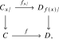 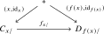
Definition 12.1.10 (Hom-functor). We define the Hom-functor of \(C\) \[ \Hom_C\colon C\catop \times C \to \An \] as the functor obtained by uncurrying the inclusion functor \(h_{C\catop}\colon C\catop \hookrightarrow \Fun(C,\An)\).
Lemma 12.1.11. For a category \(C\), there exists a preferred equivalence \[ C^{\simeq} \iso (C\catop)^{\simeq}, \qquad x \mapsto \Hom_C(x,-). \]
Proof
By directed univalence, \((C\catop)^\simeq\) may be described as the anima of small left fibrations \(p\colon X\to C\) whose total category has an initial object. Since the category of initial objects is a proposition by Lemma 12.1.5, sending such a left fibration to the image in \(C\) of its initial object defines a canonical map \[ (C\catop)^\simeq \to C^\simeq. \] In the other direction, send an object \(x\) of \(C\) to the left fibration \[ p_x\colon C_{x/}\to C, \] whose initial object is \((x,\id_x)\). The first composite is the identity. The other composite is the identity by Proposition 12.1.3, which identifies any small left fibration with an initial object over \(x\) with \(p_x\colon C_{x/}\to C\).
Lemma 12.1.12. Let \(C\) be a category and let \(x,y : C^\simeq\) be two objects.
There is a preferred isomorphism
\[
C\catop(y,x)\iso C(x,y)\, .
\]
For every functor \(f\colon C\to D\), the following square commutes:
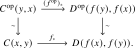
Proof
By definition, there is a canonical isomorphism \[ C\catop(y,x)\iso\Map_C(C_{y/},C_{x/})\, . \] On the other hand, since the fiber of the canonical projection \(C_{x/}\to C\) at \(y\) is \(C(x,y)\) by definition, Corollary 9.1.14 provides a canonical isomorphism \[ \Map_C(C_{y/},C_{x/})\iso C(x,y)\, . \] Composing these two isomorphisms gives the claimed identification, which sends a functor \(\alpha\colon C_{y/}\to C_{x/}\) over \(C\) to its value at \(\id_y\).
To prove the compatibility, work in the anima context \(C\catop(y,x)\) and let
\(\alpha\colon C_{y/}\to C_{x/}\) be the universal such functor. Applying the left Kan extension functor \(f_!\colon \Fun(C,\An) \to \Fun(D,\An)\) gives a map which under the identifications from Proposition 12.1.9 corresponds to the functor of left fibrations \(f_!\alpha\colon D_{f(y)/}\to D_{f(x)/}\). The functors \(f_{x/}\) and \(f_{y/}\) in that proposition represent the
Kan-extension units, so naturality of the unit gives a commutative square
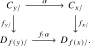
Proposition 12.1.13. For every small category \(C\), the opposite category \(C\catop\) is small.
Proof
It suffices to check that \(\Map([1],C\catop)\) is small (see Definition 8.4.5). We may write this as \[ \Map([1],C\catop) \iso \sum_{(x,y):(C\catop)^{\simeq} \times (C\catop)^{\simeq}} C\catop(x,y). \] Since \(C^\simeq\) is small, so is \((C\catop)^{\simeq}\) by Lemma 12.1.11. Therefore, it suffices to prove that each \(C\catop(x,y)\) is small. But we have seen in Lemma 12.1.12 that \(C\catop(x,y) \iso C(y,x)\), and since \(C(y,x)\) is small for all \(x\) and \(y\), this completes the proof.
Lemma 12.1.14. If \(C\) is a category and \(x : C^\simeq\) a terminal (initial) object of \(C\), then interpreting \(x\) as an object of \(C\catop\) by Lemma 12.1.11, it becomes an initial (terminal) object in the category \(C\catop\).
Proof
If \(x\) is a terminal in \(C\), then \(C(y,x)\) is contractible for all \(y : C^\simeq\). Therefore, by virtue of the preceding lemma, we see that \(C\catop(x,y)\) is contractible for all \(y : C\catop\), which proves that \(x\) is initial in \(C\catop\). The case of an initial object is done similarly.
Lemma 12.1.15. If \(p\colon X\to C\) is a right (left) fibration, then \(p\catop\colon X\catop\to C\catop\) is a left (right) fibration.
Proof
Let us assume that \(p\) is a right fibration.
We have to check that the square
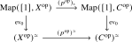 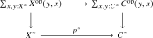 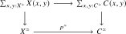 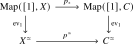
The dual case is proven exactly in the same way, simply by exchanging the roles of the functor
\(\ev_0\) and \(\ev_1\).
Proposition 12.1.16. If \(C\) is a category and \(x\) an object of \(C\), there are canonical equivalences \[ (C\catop)_{x/}\iso (C_{/x})\catop \quad\text{and}\quad (C\catop)_{/x}\iso (C_{x/})\catop \, . \]
Proof
By virtue of Lemma 12.1.14, the object \[ (x,\id_x)\in ((C_{/x})\catop)^\simeq \] defines an initial object in \((C_{/x})\catop\). On the other hand, Lemma 12.1.15 ensures that the right fibration \(C_{/x}\to C\) induces a left fibration of the form \[ (C_{/x})\catop\to C\catop\, . \] The latter sends the initial object of \((C_{/x})\catop\) to \(x\). Proposition 12.1.3 therefore gives a canonical equivalence from \((C\catop)_{x/}\) to \((C_{/x})\catop\) over \(C\catop\). The second equivalence is proved similarly.
Remark 12.1.17. The identifications of the previous proposition are functorial in \(x\). Indeed, given any map \(u\colon x\to y\) in \(C\), the functor \[ C_{/x}\to C_{/y} \] defined by composition with \(u\) is the unique functor over \(C\) that sends the terminal object of \(C_{/x}\) to the object determined by the pair \((x,u)\). Therefore, the functor \[ (C_{/x})\catop \to (C_{/y})\catop \] is the unique functor over \(C\catop\) sending the initial object to the object defined as the pair \((x,u)\). A similar description is true of the functor \[ (C\catop )_{x/}\to (C\catop )_{y/} \] induced by the map from \(y\) to \(x\) in \(C\catop\) corresponding to \(u\). The first equivalence of Proposition 12.1.16 preserves initial objects (since all equivalences have this property). This shows that post-composing with \(u\) in \(C\) corresponds through the equivalence of Lemma 12.1.12 to pre-composing with \(u\) in \(C\catop\). Similarly, the second equivalence of Proposition 12.1.16 shows that that pre-composing with \(u\) in \(C\) corresponds through the equivalence of Lemma 12.1.12 to post-composing with \(u\) in \(C\catop\).
Proposition 12.1.18. A functor \(f\colon C\to D\) has a right (left) adjoint if and only if the functor \(f\catop\colon C\catop\to D\catop\) has a right (left) adjoint.
Proof
This follows straightaway from Proposition 6.2.3 and Lemma 12.1.12, using the conclusion of Remark 12.1.17.
Proposition 12.1.19. Let \(f\colon C\to D\) be a functor between locally small categories.
The existence of a right adjoint to \(f\) is equivalent to the existence, for each
object \(y\) of \(D\), of an object \(g(y)\) of \(C\) and of a map \(\varepsilon\colon f(g(y))\to y\)
such that the induced map
\[
\Hom_C(x,g(y))\xrightarrow{\text{apply $f$}}\Hom_D(f(x),f(g(y)))
\xrightarrow{\text{compose with $\varepsilon$}}\Hom_D(f(x),y)
\]
is an isomorphism of animae.
Dually, the existence of a left adjoint to \(f\) is equivalent to the existence, for each
object \(y\) of \(D\), of an object \(g(y)\) of \(C\) and of a map \(\eta\colon y\to f(g(y))\)
such that the induced map
\[
\Hom_C(g(y),x)\xrightarrow{\text{apply $f$}}\Hom_D(f(g(y)),f(x))
\xrightarrow{\text{compose with $\eta$}}\Hom_D(y,f(x))
\]
is an isomorphism of animae.
Proof
We prove only the first assertion (the second one follows from the first by duality,
thanks to Remark 12.1.17
and Proposition 12.1.18).
By directed univalence, for any objects \(a\) and \(b\) of a locally small category \(X\),
and for any small anima \(K\) corresponding to an object \(k\colon\An^\simeq\),
there is a canonical equivalence of the form
\[
\Map(K,X(a,b))\iso\An(k,\Hom_X(a,b))\, .
\]
This proposition is thus a translation of Proposition 6.2.3,
using Remark 12.1.17.
12.1.3 Functoriality in the universe
The preceding construction assigns a functor \(f\catop\) to each functor \(f\). We now assemble these assignments coherently into a functor on the universe of small categories. We fix a universe of small categories \(\pi_{\univ}\colon\Cat_{\bullet}\to\Cat\), and assume that \(\Cat\) is small with respect to some larger universe \(\Cat'\).
Construction 12.1.20. The functor \(\ev_1\colon\Fun([1],\Cat)\to\Cat\) is a \(\Cat'\)-small cocartesian fibration, whose straightening is by definition the functor \[ \Cat \to \Cat', \qquad S\mapsto\Cat_{/S}. \] Given any functor between small categories \(u\colon S\to T\), the induced functor \[ u_!\colon\Cat_{/S}\to\Cat_{/T} \] is induced by composition with \(u\), and since \(\Cat\) has pullbacks, it has a right adjoint \[ u^*\colon\Cat_{/T}\to\Cat_{/S} \] assigning to each functor \(p\colon Y\to T\) the first projection \(S\times_TY\to S\). Therefore, the functor \(\ev_1\) above is a cartesian fibration as well (see Proposition 6.5.11).
Let \(\LFib\) be the full subcategory of \(\Fun([1],\Cat)\) whose objects are the left fibrations between small categories. Since left fibrations are closed under pullbacks, any cartesian morphism in \(\Fun([1],\Cat)\) whose target lies in \(\LFib\) lies entirely in \(\LFib\). It follows that the evaluation map \[ \ev_1\colon\LFib\to\Cat \] is a cartesian fibration, and that the embedding \(\LFib\hookrightarrow\Fun([1],\Cat)\) is a cartesian functor over \(\Cat\). On the other hand, it follows from Theorem 9.3.1, combined with the straightening equivalence \(\LFib(S) \simeq \Fun(S,\An)\), that each pullback functor \(u^*\colon\LFib(T)\to\LFib(S)\) admits a left adjoint \[ u_!\colon\LFib(S)\to\LFib(T), \] so \(\ev_1\colon\LFib\to\Cat\) is also a cocartesian fibration.
Let \(\CoRep\) be the full subcategory of \(\LFib\) whose objects are the left fibrations between small categories whose domain has an initial object. By Proposition 12.1.9, the functor \(u_!\) preserves this property for each \(u\). We deduce that \[ q:=\ev_1\colon\CoRep\longrightarrow\Cat \] is a cocartesian fibration and the full embedding \[ j\colon\CoRep\hookrightarrow\LFib \] is a cocartesian functor over \(\Cat\).
Proposition 12.1.21 (Functoriality of opposites and co-Yoneda). The assignment \(C\mapsto C\catop\) extends canonically to a functor \[ (-)\catop\colon\Cat\longrightarrow\Cat. \] Moreover, the co-Yoneda embeddings are the fibers of a cocartesian functor \[ j\colon\CoRep\longrightarrow\LFib \] over \(\Cat\).
Proof
The functor \((-)\catop\) is classified by the cocartesian fibration \(q\colon\CoRep\to\Cat\). Equivalently, it is characterized by the pullback square
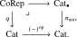
Definition 12.1.22. The functor obtained in Proposition 12.1.21 is called the opposite category functor.